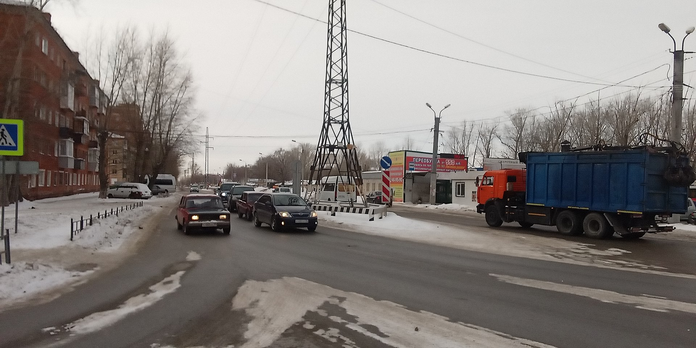
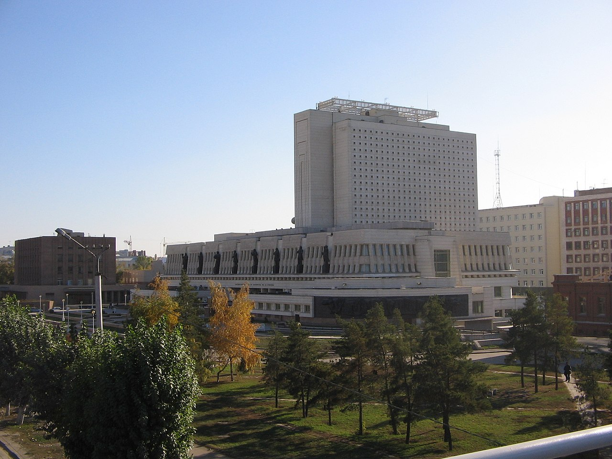

The creation of the Omsk fortress, like other Upper Irtysh fortresses, was caused by the urgent need to strengthen the trade route to China. The merit for their arrangement belongs entirely to the Siberian governor, Prince M.P. Gagarin. However, he also bears a large share of the responsibility. Gagarin, being the governor in Nerchinsk, and then the head of the Siberian order and the Siberian province, devoted a lot of time and effort to trade with China. And above all, the organization of the trade route to this country. The main route passed from Tobolsk down the Irtysh, then up the Ob, then along the Ket portage to the Yenisei and further to the border with China. The journey was long, difficult, and expensive. There was also a second option - up the Irtysh, two times shorter and much easier. Kalmyk, Kyrgyz-Kaisak and Chinese chiefs were interested in this route as they all had their share of international trade. However, above the mouth of the Ob, trade caravans were attacked by free detachments of Kalmyks (Oirats) and Kirghiz-Kaisaks, which their rulers could not cope with. A reliable guard was needed with its placement in stationary fortifications.
The Soviet government preferred the young Novonikolayevsk (later known as Novosibirsk) as the administrative center of Western Siberia, prompting the mass transfer of administrative, cultural, and educational functions from Omsk. This somewhat stunted Omsk's growth and sparked a continuing rivalry between the two cities.[24] Omsk received new life as a result of World War II. Because it was both far from the fighting and had a well-developed infrastructure, Omsk provided a perfect haven for much of the industry evacuated away from the frontlines in 1941. Additionally, contingency plans were made to transfer the provisional Soviet capital to Omsk in the event of a German victory during the Battle of Moscow (October 1941 to January 1942).[25] At the end of the war, Omsk remained a major industrial center, subsequently becoming a leader in Soviet military production.
